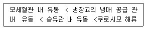
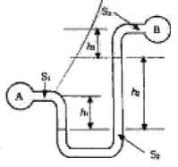
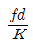
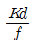
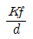
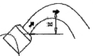
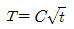
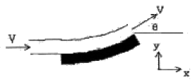

소방설비산업기사(기계) (2010-03-07 기출문제)
1과목: 소방원론
1. 자연 발화가 잘 일어나기 위한 조건이 아닌 것은?
- 주위의 온도가 높다.
- 열전도율이 낮다.
- 표면적이 넓다.
- 발열량이 작다.
(정답률: 66%)

2. 다음 중 물과 반응하여 수소가 발생하지 않는 것은?
- Na
- K
- S
- Li
(정답률: 64%)
3. 다음 중 폭발을 일으킬 위험이 가장 낮은 물질은?
- 수소가스
- 마그네슘분
- 밀가루
- 시멘트가루
(정답률: 82%)
4. 철골콘크리트조의 기둥에서 내화구조의 기준으로 옳은 것은?
- 작은 지름 15cm 이상으로서 철골을 두게 4cm 이상의 철망 몰탈로 덮은 것
- .작은 지름 20cm 이상으로서 철골을 두께 7cm 이상의 콘크리트 블록으로 덮은 것
- 작은 지름 25cm 이상으로서 철골을 두께 5cm 이상의 콘크리트로 덮은 것
- 작은 지름 30cm 이상으로서 철골을 두께 3cm 이상의 석재로 덮은 것
(정답률: 71%)
5. 인화점(Flash Point)을 가장 옳게 설명한 것은?
- 가연성 액체가 증기를 계속 발생하여 연소가 지속될 수 있는 최저온도
- 가연성 증기 발생시 연소범위의 하한계에 이르는 최저온도
- 고체와 액체가 평형을 유지하며 공존할 수 있는 온도
- 가연성 액체의 포화증기압이 대기압과 같아지는 온도
(정답률: 63%)
6. 일반적으로 목조건축물의 화재시 발화에서 최성기까지의 소요시간은 어느 정도인가? (단, 풍속이 거의 없을 경우를 가정한다.)
- 1분마다
- 4 ~ 14분
- 30 ~ 60분
- 90분이상
(정답률: 73%)
7. 다음 중 전기 화재에 해당하는 것은?
- A급화재
- B급화재
- C급화재
- D급화재
(정답률: 88%)
8. Halon 1301에서 숫자 “0”은 무슨 원소가 없다는 것을 뜻하는가?
- 탄소
- 브롬
- 불소
- 염소
(정답률: 72%)
9. 전기시설물에 적응성이 없는 소화방식은?
- 이산화탄소에 의한 소화
- 하론 1301레 의한 소화
- 마른 모래에 의한 소화
- 물분무에 의한 소화
(정답률: 57%)
10. 액화천연가스(LNG)의 주성분은?
- CH4
- H2
- C3H8
- C3H4
(정답률: 71%)
11. 피난계획의 일반원칙 중 Fail safe 에 대한 설명으로 옳은 것은?
- 한 가지 피난기구가 고장이 나도 다른 수단을 이용할 수 있도록 고려하는 것
- 피난설비를 반드시 이동식으로 하는 것
- 본능적 상태에서도 쉽게 식별이 가능하도록 그림이나 색채를 이용하는 것
- 피난수단을 조작이 간편한 원시적인 방법으로 설계하는것
(정답률: 74%)
12. 부피비러 메탄 80%, 에탄 15%, 프로판 4%, 부탄 1%인 혼합기체가 있다. 이 게치의 공기 중에서의 폭발하한계는 약 몇 vol% 인가? (단, 공기 중 단일 가스의 폭발하한계는 메탄 5vol%, 에탄 2vol%, 프로판 2vol%, 부탄 1.8vol% 이다.)
- 2.2
- 3.8
- 4.9
- 6.2
(정답률: 73%)
13. 다음 중 바닥부분의 내화구조 기준으로 틀린 것은?
- 철근콘크리트조로서 두께가 5cm 이상인 것
- 철골철근콘크리트조로서 두께가 10cm 이상인 것
- 철제로 보강된 콘크리트 블록조ㆍ벽돌조 또는 석조로서 철재에 덮은 콘크리트블록 등의 두께가 5cm 이상인 것
- 철재의 양면을 두께 5cm 이상의 철망모르타르 도는 콘크리트로 덮은 것
(정답률: 52%)
14. 중질유가 탱크에서 조용히 연고하다 열유층에 의해 가열된 하부의 물이 폭발적으로 끓어 올라와 상부의 뜨거운 기름과 함께 분출하는 현상을 무엇이라 하는가?
- 플래쉬오버
- 보일오버
- 백드래프트
- 롤오버
(정답률: 78%)
15. 할로겐화합물 소화약제에 대한 설명으로 옳은 것은?
- 연소 연쇄반응을 촉진시킨다.
- 소화 후 잔사가 남지 않는 장점이 있다.
- Halon 104는 소화효과도 우수하고 특성도 없다.
- Halon 1301, Halon 1211은 에탄이 유도체이다.
(정답률: 61%)
16. 다음 중 가연성 물질이 아닌 것은?
- 수소
- 산소
- 메탄
- 암모니아
(정답률: 70%)
17. 다음 중 착화온도가 가장 높은 물질은?
- 황린
- 아세트알데히드
- 메탄
- 이황화탄소
(정답률: 50%)
18. 가연성 기체 또는 액체의 연소범위에 대한 설명 중 틀린 것은?
- 연소 하한과 연소 상한의 범위를 나타낸다.
- 연소 하한이 낮을수록 발화위험이 높다.
- 연소범위가 넓을수록 발화위험이 낮다.
- 연소범위는 주위온도와 관계가 있다.
(정답률: 82%)
19. 연소의 3요소에 해당하지 않는 것은?
- 점화원
- 연쇄반응
- 가연물질
- 산소공급원
(정답률: 76%)
20. 소방시설의 분류에서 다음 중 소화설비에 해당하지 않는 것은?
- 스프링클러설비
- 수동식소화기
- 옥내소화전설비
- 연결송수관설비
(정답률: 66%)
2과목: 소방유체역학
21. 비중이 0.89인 유체 35N의 체적은 약 몇 m3인가?
- 0.13×10-3
- 2.43×10-3
- 3.03×10-3
- 4.01×10-3
(정답률: 57%)
22. 간격이 5mm인 두 개의 평행평판 사이에 비중 0.8 동점성계수 1.25×10-4m2/s인 유체가 채워져 있다. 한쪽 평판은 4m/s로 움직이고 다른 쪽은 고정되어 있을 때 관에 발생하는 평균 전단응력은 몇 Pa 인가?
- 40
- 60
- 80
- 160
(정답률: 57%)
23. 다음 유동들의 배열순서는 무엇을 기준으로 한 것인가?

- 특성 길이
- 특성 온도
- 특성 압력
- 특성 밀도
(정답률: 43%)
24. 어느 일정 길이의 배관 속을 매분 200L의 물이 흐르고 있을 때의 마찰손실 압력이 20kPa이었다면 동일 관에 물 흐름이 매분 300L로 증가할 경우 마찰손실 압력은 약 몇 kPa 인가? (단, 마찰손실 계산은 하젠-윌리엄스 공식을 따른다고 한다.)
- 32.35
- 37.35
- 42.34
- 47.35
(정답률: 39%)
25. 액체 속에 경사지게 잠겨있는 평판의 윗면에 작용하는 압력힘의 작용점에 대한 설명 중 맞는 것은?
- 경사진 평판의 도심에 있다.
- 경사진 평판의 도심보다 아래에 있다.
- 경사진 평판의 도심보다 위에 있다.
- 경사진 평판의 도심과는 관계가 없다.
(정답률: 70%)
26. 압력이 100kPa, 체적이 3m3인 0℃의 공기가 이상적으로 단열 압축되어 그 체적이 1m3으로 감소되었다. 이 과정 에서 엔탈피 변화량은 약 몇 kJ 인가? (단, 공기의 비열비는 1.4, 기체상수는 0.287kJ/kgㆍK이다.)
- 550
- 560
- 570
- 580
(정답률: 39%)
27. 그림과 같은 U자관 차압마노미터가 있다. 비중 S1=0.9, S2=13.6, S3=1.2이고 k1=10cm, k2=30cm, k3=20cm일 때 PA-PB는 얼마인가?

- 41.5kPa
- 28.8kPa
- 41.5Pa
- 28.8Pa
(정답률: 56%)
28. 관 속의 부속품을 통한 유체 흐름에서 관의 등가길이(상당길이)를 표현하는 식은? (단, 부차 손실계수 K, 관 지름 d, 관마찰계수 f)
- Kfd



(정답률: 70%)
29. 지름 250mm 관속을 평균속도 1.2m/s로 유체가 흐르고 있다. 이 유동이 층류라면 관속에서의 최대 속도는 몇 m/s가 되겠는가?
- 0.6
- 1.2
- 2.4
- 3.0
(정답률: 57%)
30. 높이 40m의 저수조에서 15m의 저수조로 직경 45cm, 길이 600m의 주철관을 통해 물이 흐르고 있다. 유량은 0.25m3/s이며, 관로 중의 터빈에서 29.4kW의 동력을 얻는다면 관로의 손실수두는 약 몇 m 인가? (단, 터빈의 효율은 100%이다.)
- 12
- 13
- 14
- 15
(정답률: 44%)
31. 클라제우스 부등식이 기술하는 열역학 법칙은?
- 제 0 법칙
- 제 1 법칙
- 제 2 법칙
- 제 3 법칙
(정답률: 61%)
32. 그림과 같이 수평면에서 60° 경사진 직경 10cm의 원관에서 물이 출구속도 7m/s로 분출될 때 물의 최고높이(H)에서 물기둥의 직경은 약 몇 cm 인가? (단, 유동단면에서의 물의 속도는 균일하고, 공기저항은 무시한다.)

- 12.1
- 14.1
- 16.2
- 18.2
(정답률: 40%)
33. 유체의 부력을 설명한 것으로 옳은 것은?
- 물체에 의해 배제된 액체의 밀도와 같다.
- 물체에 의해 배제된 액체의 비체적과 같다.
- 물체에 의해 배제된 액체의 비중량과 같다.
- 물체에 의해 배제된 액체의 무게와 같다.
(정답률: 41%)
34. 이상기체에 대한 다음의 설명 중 틀린 것은?
- 엔탈피는 온도만의 함수이다.
- 정압비열은 온도와 압력의 함수로 볼 수 있다.
- 내부 에너지는 온도안의 함수이다.
- 엔트로피는 온도와 압력의 함수로 볼 수 있다.
(정답률: 46%)
35. 관의 절대온도 T가 시간 t에 따라

로 주어진다. 여기서 C는 상수이다. 이 관의 흑체방사도는 시간에 따라 어떻게 변하는가? (단, σ는 Stefan-Boltzmann 상수이다.)- σC4
- σC4 t
- σC4 t2
- σC4 t4
(정답률: 60%)
36. 지름 75mm인 원관 속을 평균속도 2m/s로 물이 흐르고 있을 때 질량 유량은 약 몇 kg/s 인가?
- 10.2
- 9.6
- 9.2
- 8.8
(정답률: 57%)
37. 어떤 펌프가 1000rpm으로 회전하여 전양정 10m에 0.5m3/min의 유량을 방출한다. 이 펌프가 2000rpm으로 운전된다면 유량은 몇 m3/min이 되겠는가?
- 1.0
- 0.75
- 0.5
- 1.25
(정답률: 51%)
38. 그림과 같이 속도 V인 자유제트가 곡면에 부딪혀 θ의 각도로 유통방향이 바뀐다. 유체가 곡면에 가하는 힘의 x, y성분의 크기, Fx와 Fy는 θ가 증가함에 따라 각각 어떻게 되겠는가? (단, 유통단면적은 일정하고, 0°<θ<90°이다.)

- Fx:감소한다, Fy:감소한다.
- Fx:감소한다, Fy:증가한다.
- Fx:증가한다, Fy:감소한다.
- Fx:증가한다, Fy:증가한다.
(정답률: 50%)
39. 유효낙차가 65m이고 유량이 20m3/s인 수력발전소에서 수차의 이론 출력은 약 몇 kW인가?
- 12740
- 1300
- 12.74
- 1.3
(정답률: 53%)
40. 펌프에서 공동 현상이 발생할 때 나타나는 현상이 아닌 것은?
- 소음과 진동 발생
- 양정곡선 저하
- 효율곡선 증가
- 펌프 깃의 침식
(정답률: 74%)
3과목: 소방관계법규
41. 간이스프링클러설비를 설치하여야 할 특정소방대상물에 해당되는 것은?
- 근린생활시설로서 사용하는 바닥면적 합계가 5백제곱미터 이상인 것은 전층
- 근린생활시설로서 사용하는 바닥면적 합계가 1천제곱미터 이상인 것은 전층
- 교육연구시설 내에 있는 합숙소로서 연면적 50제곱 미터 이상인 것
- 교육연구시설 내에 있는 합숙소로서 연면적 100제곱 미터 미만인 것
(정답률: 52%)
42. 소방시설공사업자가 소속 소방기술자를 소방시설공사 현장에 배치하지 않았을 경우 얼마의 과태료에 처하는가?
- 100만원 이하
- 200만원 이하
- 300만원 이하
- 400만원 이하
(정답률: 53%)
43. 2급 방화관리대상물의 방화관리자로 선임될 수 있는 자격 기준으로 알맞은 것은?
- 전기기능사 자격을 가진 자
- 소방서에서 1년 이상 화재진압 또는 보조업무에 종사한 경력이 있는 자
- 경찰공무원으로 2년 이상 근무한 경력이 있는 자
- 의용소방대원으로 2년 이상 근무한 경력이 있는 자
(정답률: 48%)
44. 자체소방대를 설치하여야 하는 사업소는 몇 류 위험물을 취급하는 제조소인가?
- 제1류
- 제2류
- 제3류
- 제4류
(정답률: 62%)
45. 옥외에 연결송수구 및 옥내에 방수구가 부설된 옥내소화전설비ㆍ스프링클러설비ㆍ간이스프링클러설비 또는 연결살수설비를 화재안전기준에 적합하게 설치한 경우 그 설비의 유효범위안의 부분에서 설치가 면제되는 것은?
- 연소방지설비
- 상수도소화용수설비
- 물분무등소화설비
- 연결송수관설비
(정답률: 50%)
46. 위험물 제조소등이 관계인은 제조소등의 용도를 폐지한때에는 제조소등의용도를 폐지한 날부터 며칠 이내에 시ㆍ도지사에게 신고하여야 하는가?
- 7일
- 10일
- 14일
- 30일
(정답률: 49%)
47. 소방시설기준 적용의 특례에서 특정소방대상물의 관계인이 소방시설을 갖추어야 함에도 불구하고 관련 소방시설을 설치하지 아니할 수 있는 특정소방대물을 설명한 것 중 옳지 않은 것은?
- 피난위험도가 낮은 특정소방대상물
- 화재안전기준을 적용하기가 어려운 특정소방대상물
- 화재안전기준을 달리 적용하여야 하는 특수한 용도 또는 구조를 가진 특정소방대상물
- 위험물안전관리법 제19조의 규정에 따른 자체소방대사 설치된 특정소방대상물
(정답률: 48%)
48. 화재경계지구의 지정대상지역에 해당되지 않는 곳은?
- 공장ㆍ창고가 밀집한 지역
- 석유화학제품을 생산하는 공장이 있는 지역
- 시장지역
- 소방용수시설 또는 소방출동로가 있는 지역
(정답률: 79%)
49. 소방공사감리업의 등록기준에서 전문소방공사감리업을 하고자 하는 경우 갖추어야 할 장비에 속하지 않는 것은?
- 수압기
- 전기절연내력시험시
- 검량계
- 하론농도측정기
(정답률: 51%)
50. 화재, 재난ㆍ재해 그 밖의 위급한 사항이 발생한 경우 소방대가 현장에 도착할 때까지 관계인의 소방활동에 포함되지 않는 것은?
- 불을 그거나 불이 번지지 아니하도록 필요한 조치
- 소방활동에 필요한 보호장구 지급 등 안전을 위한 조치
- 경보를 울리는 방법으로 사람을 구출하는 조치
- 대피를 유도하는 방법으로 사람을 구출하는 조치
(정답률: 67%)
51. 위험물 제조소등별로 설치하여야 하는 경보설비의 종류에 포함되지 않는 것은?
- 자동화재탐지설비
- 비상경보설비
- 비상벨설비
- 확성장치
(정답률: 41%)
52. 위험물안전관리법령상 제4류 위험물에 속하는 것으로 나열된 것은?
- 특수인화물, 질산염류, 황린
- 알코올, 황화린, 니트로화합물
- 동식물유류, 알코올류, 특수인화물
- 알킬알루미늄, 질산, 과산화수소
(정답률: 68%)
53. 화재에 관한 위험경보와 관련하여 기상법 관련 규정에 따른 이상기상의 예보 또는 특보가 있는 때에 화재에 관한 경보를 발하고 그에 따른 조치를 할 수 있는 자는?
- 소방서장
- 기상청장
- 시ㆍ도지사
- 국무총리
(정답률: 55%)
54. 신축 건축물 중 연면적이 몇 제곱미터 이상인 특정대상물은 성능위주설계를 하여야 하는가? (단, 주택으로 쓰이는 층수가 5개층 이상인 주택인 아파트를 제외한다.)
- 10만 제곱미터
- 20만 제곱미터
- 100만 제곱미터
- 500만 제곱미터
(정답률: 48%)
55. 소반기본법의 목적으로 거리가 먼 것은?
- 화재의 예방ㆍ경계ㆍ진압
- 국민의 생명ㆍ신체 및 재산보호
- 소방기술관리 및 진흥
- 공공의 안녕질서 유지와 복리증진
(정답률: 71%)
56. 화재발생 사실을 통보하는 기계ㆍ기구 또는 설비인 경보설비가 아닌 것은?
- 무선통신보조설비
- 비상방송설비
- 단독경보형감지기
- 자동화재속보설비
(정답률: 65%)
57. 소방용기계ㆍ기구에 속하지 않는 것은?
- 화학반응식거품소화약제
- 방명액ㆍ방염도료 및 방염성물질
- 자동소화설비의 기기 중 유수검지장치
- 가스누설경보기
(정답률: 41%)
58. 피난층에 대한 설명으로 알맞은 것은?
- 지상 1층
- 2층 이하로 쉽게 피난할 수 있는 층
- 지상으로 통한 계단이 있는 층
- 곧바로 지상으로 통하는 출입구가 있는 층
(정답률: 73%)
59. 측정소방대상물 중 노유자(老幼者)시설에 속하지 않는 것은?
- 유치원
- 정신보건시설
- 경로당
- 요양시설
(정답률: 70%)
60. 소방서의 종합상황실의 실장이 소방본부의 종합상황실에 지체 없이 보고하여야 하는 상황에 해당하지 않는 것은?(오류 신고가 접수된 문제입니다. 반드시 정답과 해설을 확인하시기 바랍니다.)
- 사망자가 5인 이상 발생한 화재
- 사상자가 10인 이상 발생한 화재
- 이재민이 50인 이상 발생한 화재
- 재산피해액이 20억원 이상 발생한 화재
(정답률: 59%)
4과목: 소방기계시설의 구조 및 원리
61. 제연설비에 전용 샤프트를 설치하여 건물 내외부의 온도차와 화재시 발생되는 열기에 의한 밀도차이를 이용하여 지분 외부의 루프모니터 등을 이용하여 옥외로 배출, 환기시키는 방식을 무엇이라 하는가?
- 자연방식
- 루프해치방식
- 스모크타워방식
- 제3중 기계제연방식
(정답률: 66%)
62. 배출 풍도단면의 긴 변 또는 직경의 크기가 450mm 초과 750mm 이하일 경우의 강판 두께는 최소 몇 mm 이상이어야 하는가?
- 0.5
- 0.6
- 0.8
- 1.0
(정답률: 56%)
63. 연결송수관설비에 관한 설명이다. 틀린 것은?
- 아파트 용도의 11층 이상에 설치하는 방수구는 단구형으로 할 수 있다.
- 배관은 지면으로부터 높이가 31m 이상인 소방대상물에는 습식설비로 설치한다.
- 주배관의 관경은 100mm 이상의 것이어야 한다.
- 지표면에서 최상층 방수구의 높이가 70m 이상의 소방대상물의 펌프 양정은 최상층에 설치된 노즐선단의 압력이 0.25MPa 이상의 압력이 되어야 한다.
(정답률: 43%)
64. 상수도 소화용수설비에서 호칭지름 몇 mm 이상의 수도배관에, 호칭지름 몇 mm 이상의 소화전을 접속해야 하는가?
- 80mm, 65mm
- 75mm, 100mm
- 65mm, 100mm
- 50mm, 65mm
(정답률: 62%)
65. 연결살수전용헤드가 7개 설치되어 있을 경우 배관의 구경은?
- 40mm
- 50mm
- 65mm
- 80mm
(정답률: 50%)
66. 폐쇄형스프링클러헤드 사용하는 설비에서 하나의 방호구역의 바닥면적의 기준은 몇 m2 이하인가?
- 3000
- 2500
- 2000
- 1500
(정답률: 66%)
67. 국소방출방식의 이산화탄소설비의 분사헤드는 당해 설비의 소화약제의 저장량은 얼마 이내에 방사할 수 있는 것으로 설치하여야 하는가?
- 10초 이내
- 30초 이내
- 1분 이내
- 2분 이내
(정답률: 72%)
68. 전동기 또는 내연 기관에 따른 펌프를 이용하는 가압송수장치의 설치기준에 있어 당해 소방대상물에 설치된 옥외소화전을 동시에 사용하는 경우 각 옥외소화전의 노즐선단에서의 ㉠방수압력과 ㉡방수량은 각각 얼마 이상이어야 하는가?
- ㉠ 0.25MPa 이상, ㉡ 350ℓ/min 이상
- ㉠ 0.17MPa 이상, ㉡ 350ℓ/min 이상
- ㉠ 0.25MPa 이상, ㉡ 100ℓ/min 이상
- ㉠ 0.17MPa 이상, ㉡ 100ℓ/min 이상
(정답률: 65%)
69. 팽창비가 50인 포 소화설비에서 혼합비율 3%, 원액지정량이 210ℓ일 때 포를 방출한 후의 포의 제작은 얼마가 되겠는가?
- 200m3
- 250m3
- 300m3
- 350m3
(정답률: 39%)
70. 삽을 상비한 마른모래 50리터 이상의 것 1포의 능력단위는 얼마인가?
- 0.1
- 0.2
- 0.5
- 1.0
(정답률: 72%)
71. 옥외소화전설비의 용어 정의 중 틀린 것은?
- “고가수조”라 함은 구조물 도는 지형지물 등에 설치하여 자연낙차의 압력으로 급수하는 수조를 말한다.
- “연성계”라 함은 대기압 이상의 압력을 측정할 수 있는 계측기를 말한다.
- “진공계”라 함은 대기압 이하의 압력을 측정하는 계측기를 말한다.
- “개폐표시형밸브”라 함은 밸브의 개폐여부를 외부에서 식별이 가능한 밸브를 말한다.
(정답률: 61%)
72. 소방대상물이 노유자시설인 경우 소화기구의 능력단위의 기준은 댕해 용도의 바닥면적 몇 m2마다 1단위 이상으로 설치하는가?
- 30m2
- 50m2
- 100m2
- 200m2
(정답률: 55%)
73. 위험물 저장탱크에 고정포방출구 포소화설비를 설치하고 탱크주위에 보조 소화전을 2개소 설치하였다. 보조 소화전에서 방출하기 위하여 필요한 소화약제의 양은? (단, 소화약제는 6% 단백포이다.)
- 240ℓ 이상
- 480ℓ 이상
- 720ℓ 이상
- 960ℓ 이상
(정답률: 42%)
74. 자동차 차고에 설치하는 물분무 소화설비의 배수구설비에 대해서 옳은 것은?
- 차량이 주차하는 장소의 바닥면에는 배수구를 향하여 100분의 1 이상의 경사를 유지하여야 한다.
- 차량의 주차하는 장소에는 모두 높이 5cm 이상의 구획경계턱을 하여야 한다.
- 배수설비는 가압송수장치의 최대수송능력의 수량을 유효하게 배수할 수 있는 크기 및 기울기로 한다.
- 배수구에는 길이 50m 마다 집수관을 설치하여야 한다.
(정답률: 63%)
75. 어느 소방대상물에 할론 1301 소화설비를 하려고 한다. 적합한 배관은?
- KS D 3562 중 이음매 없는 스케줄 40 이상의 것
- KS D 3562 중 이음매 있는 스케줄 40 이상의 것
- KS D 3507 중 이음매 없는 스케줄 80 이상의 것
- KS D 3507 중 이음매 있는 스케줄 80 이상의 것
(정답률: 52%)
76. 분말 소화설비에 사용하는 소화 약제 중 제 3종 분말은 어느 것을 주성분으로 한 것인가?
- 탄산수소칼륨
- 인산염
- 탄산수소나트륨
- 요소
(정답률: 73%)
77. 6층 무대부(층고 12m)에 각 회로당 개방형스프링클러 헤드를 20개식 설치하였을 경우에 소요되는 최저 수원의 양은 얼마인가?
- 32.0m3 이상
- 38.0m3 이상
- 48.0m3 이상
- 51.2m3 이상
(정답률: 47%)
78. 간이스프링클러설비 중 폐쇄형 간이헤드를 사용하여 상수도설비에서 직접 연결할 경우 배관 및 밸브 등의 올바른 설치방법은?(오류 신고가 접수된 문제입니다. 반드시 정답과 해설을 확인하시기 바랍니다.)
- 수도용계량기-개폐표시형밸브-체크밸브-압력계-유수검지장치-시험밸브 순으로 설치
- 수도용계량기-개폐표시형밸브-압력계-체크밸브-유수검지장치-시험밸브 순으로 설치
- 수도용계량기-개폐표시형밸브-압력계-체크밸브-압력계-개폐표시형밸브-일제개방형밸브 순으로 설치
- 수도용계량기-개폐표시형밸브-압력계-체크밸브-압력계-개폐표시형밸브 순으로 설치
(정답률: 47%)
79. 투척용소화기 등을 설치할 때는 바닥으로부터 몇 m 이하의 높이에 설치하는 것이 가장 이상적인가?
- 1.5m 이하
- 2.0m 이하
- 2.5m 이하
- 3.0m 이하
(정답률: 70%)
80. 옥내소화전설비에서 연결송수관설비의 배관을 겸용할 경우 방수구로 연결되는 배관의 구경은 얼마로 하여야 하는가?
- 50mm 이상
- 65mm 이상
- 100mm 이상
- 150mm 이상
(정답률: 58%)